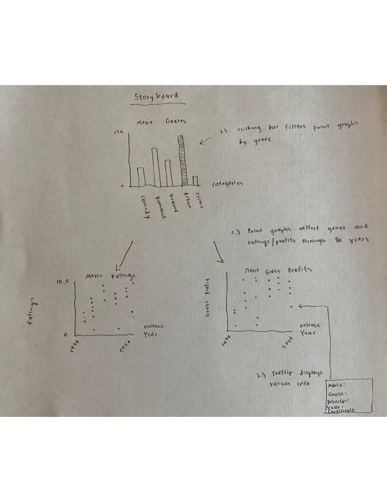

Project Details and Information
By: Audrey Zhu, Emma Baldwin, Wanli Cheng
Project Information
- Motivations
- We did movies since it was the cleanest, most interesting dataset
- We thought it could be interesting to visualize, since this topic is relevant to many people
- Design rationale for visual encoding decisions + interaction techniques
- Initially, we will have a bar chart displaying the amount of movies in different genres. Following this chart, there will be point graphs displaying movie ratings within a specific genre as well as a chart displaying gross profits within the same specified genre. The charts will have interactions and different charts will be displayed depending on which bar in the chart is clicked
- Takeaways
- Some of the takeaways that we had were that the majority of movies produced in the last twenty years were classified as dramas, with action and comedy in second and third respectively. Additionally, another interesting finding was that although drama had the most movies, the highest earning movie did not belong to that genre, but rather to the action genre. Another finding was that unsurprisingly, movies that were highly rated also yielded greater box office returns in the form of gross profits.
Design + Development
- Alternatives Tried
- We intially decided that the use of a barchart and two scatterplots would be most appropriate visually and implmentation-wise to convey the data.

- Struggles
- It was difficult to use the data at first, because of how we wanted to structure our visualizations, so we ended up with a separate csv file that counted up the movies within each genre
- It was also difficult to coordinate the visualizations. We ran into many issues getting the scatterplots to load properly with the filtered data from the bar chart
- Coordinating work between the members was also stressful. We each worked on our individual visualizations by ourselves, but since we were unable to meet up in person, it was complicated to do the coordinating code properly
- Lessons Learned
- We learned how to cooperate with each other, as well as how to read and interpret another person’s code
- We also learned how to make dynamically updating scatterplots
- Workload Distribution
- Audrey: gross profit scatterplot, ratings scatterplot, html pages
- Emma: barchart, gross profit scatterplot, ratings scatterplot, html pages
- Wanli: barchart, gross profit scatterplot, ratings scatterplot, html pages